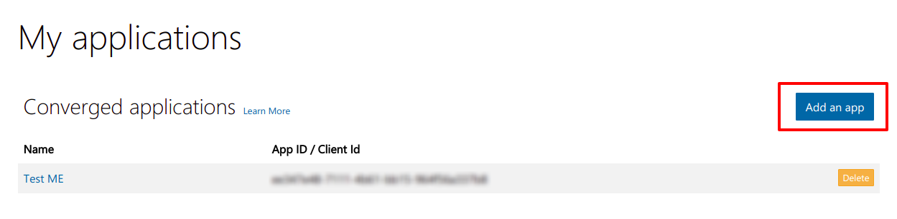
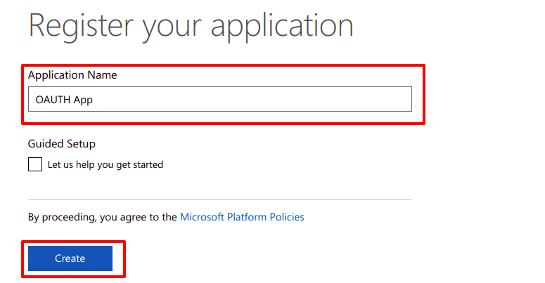
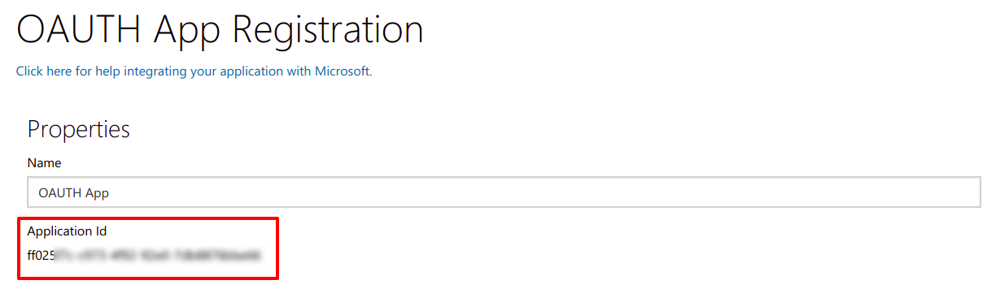
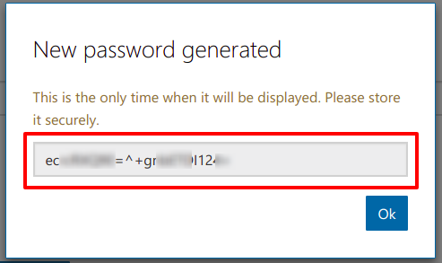
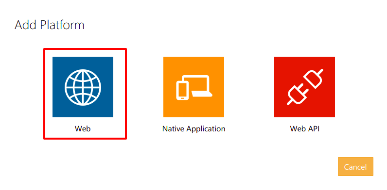
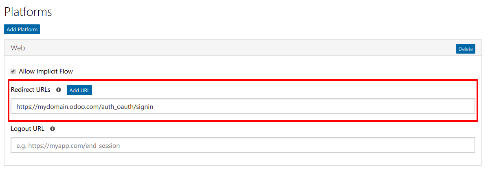

- Name your new app and click:
Create.

- On the Registration page that follows, copy the
Application Id. This is your client_id.

- Click Generate New Password.
- Copy your password. This is your client_secret.

- Click Add Platform, then select Web

- Enter the following under Redirect URLs
- https://mydomain.odoo.com/auth_oauth/signin

- Once done, you receive two information (your Client ID and Client Password). You have to insert your Client ID and Client Password in the General Settings.